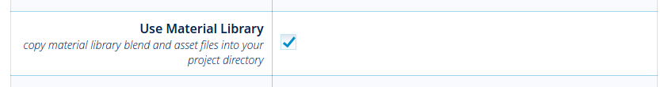
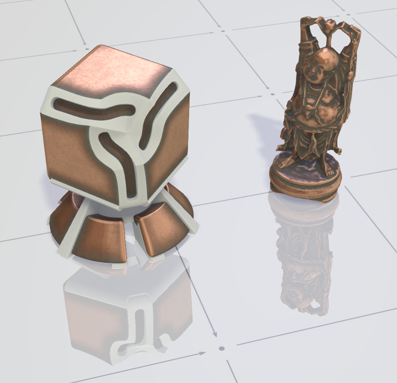
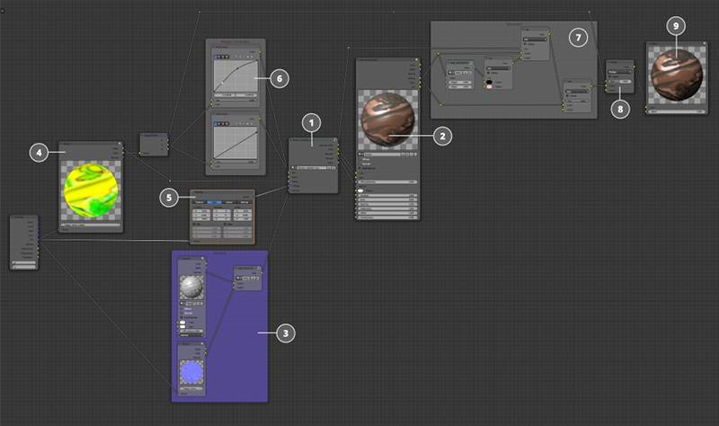
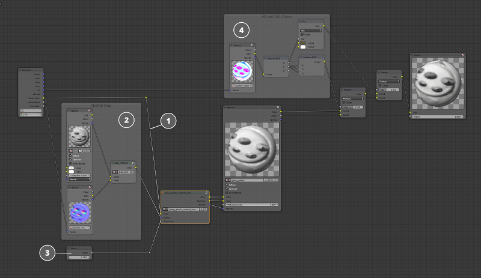

材质库¶
材质库是用户可以在其中找到基本和最常用的材质，在他或她的项目中使用或创建他或她自己的基于这些材质的材质库。
当创建一个新的项目，你可以插入材质库进去，然后直接从那里插入材质。
要做到这一点，使用创建项目时使用 Project Manager 勾选上 Use Material Library ，然后，整个材质库将被自动复制到新的项目文件夹下面的 /assets/material_library/ 文件夹中。
注解
也可以在已经存在的项目中使用材质库。你需要做的是将文件从 /blender/material_library/ 文件夹复制到项目目录中的 /assets/ 文件夹中。然后，您可以将包含所需材质的文件链接到场景文件，并在场景中使用这些材质。
注解
材质（或任何其他物体）可以 链接 或者 附加 到场景。这两种方法的区别描述如下 here.
库结构¶
所有材质通过文件夹组织结构（由材质类别），并通过一个单独的文件（由材质）。每共blend文件包含一个基底材质和物体添加该材质，演示该材质可以与该材质相关联的物体上（例如，元宝为金材质）。
材质结构¶
核心材质
Material节点从核心接收任何有价值信息法线贴图可以加到任何一个材质核心
纹理包含额外的遮罩信息给材质给予物体正确显示。大多数材质使用下面的遮罩：
环境闭塞贴图
污垢贴图
磨损图
绿锈贴图
这些遮罩不是在每个材质中使用，需要时，才为着色器显示一种特定的方式。
在
Mapping节点用来控制UV映射的参数。RGB Curve节点可以在遮罩插入核心材质之前修正。具体的高光贴图在
Material节点之后，用来实现不同程度的镜面模糊。烘焙的环境闭塞贴图是在输出节点之前加的着色器。
Output节点。
使用材质的一个例子¶

在这里，可以看到，设置塑料材质为一种特殊的演示物体的一个例子，而无需使用被插入核心材质中的纹理。

基色用一个简单的``RGB``颜色节点创建并插入到核心材质输入。
材质实现不使用任何法线贴图，所以几何数据插入到
Normal输入。该核心材质具有控制光泽的材质上的量的某些参数。在这种情况下，这个参数的值设置为最大。
该材质还采用了烘焙的环境闭塞贴图。
现在，让我们来看看使用相同材质在不同物体的情况 - 一个塑料手柄。
物体的几何形状的顶点的颜色被用作这里的基本颜色。
手柄的几何形状烘焙到了一张法线贴图上，并连接到核心材质的
Normal输入。光泽的程度较低。
替代演示物体的遮罩，专为游戏手柄模型烘焙的遮罩（环境光遮蔽和污垢）被使用。
注解
应当指出的是，核心材质并没有改变以适应不同的几何形状。


{kind=link}
{kind=link}
{kind=link}
{kind=link}
{kind=link}
{kind=link}
{kind=link}